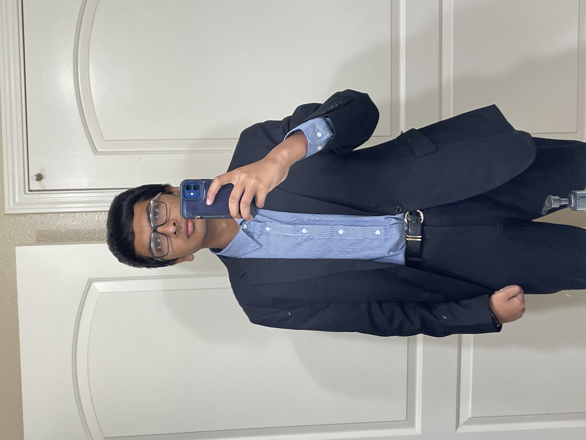

About Me

Hello, I'm Paarth Agrawal
I'm a current high school junior at Emerald High School, based in Dublin, California. I'm aspiring to study Electrical Engineering in college at a top university like UC Berkeley, Stanford, or UCLA and want to do my part in building tomorrow's world.
As a high schooler, I engage myself in several extra curricular activities beyond my interests in engineering. I'm a member of my school's traveling varsity debate team, and am a state and national qualifier. I'm an Eagle Scout at Troop 998B, based in Pleasanton, where I developed maturity, responsibility, and a desire to learn more about the world around me. I work as a part-time grader and instructor at my local Kumon, teaching kids ages 5-14 crucial skills in reading and mathematics to supplement their traditional education.
I am a strong believer that with hard work and discipline, you can achieve whatever you set out for. If you're interested in learning more about me, check out my projects and resume in the portfolio as well!